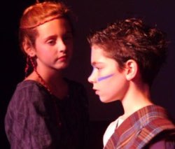
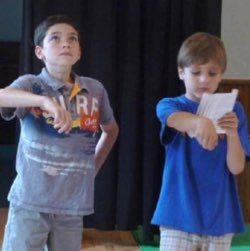

Shakespeare is Fun Workshop
For young people ages 7-16
August 12 & 14 from 1-3pm
How do you make Shakespeare fun for children when adults often find it difficult to understand? There are a few basic "secrets" that one needs to know to open up the joy of experiencing the world of one of the greatest playwrights to anyone.
Leanne Young, local high school teacher, Shakespearean actress and scholar, and a member of the Phoenix Players Acting Workshop faculty, has created a unique program that allows children to quickly learn these "secrets," and then go on to find that Shakespeare talks about problems they encounter every day. Once they learn this, it becomes fun to read and "do" Shakespeare.
Registration
The Phoenix Players is a non-profit organization, so our fees are very reasonable for the level of teaching provided.
The cost for this workshop is just $60 for the two afternoon sessions and registration is easy. Just download the registration form to get started.
- Download the flyer for full details
- Register today!
Download the registration form
Acting Skills Workshop
For young actors ages 7-14
August 19-20 from 1-4pm
Every child, from those who have never acted before to those who have done several plays, can benefit from this workshop, which teaches professional-level acting, film and stage skills in two afternoons filled with fun, skill building games, and scene practice.
Taught by Anne Levy, a retired theatre professor at Michigan State University and the Director of the Players' Phire Phlies Youth Acting Ensemble, the workshop will pair participants with others at their own level as they work on skills from the most basic to more advanced. In addition, after the workshop, offers may be made to a few participants who display the kind of ability necessary to join the Phire Phlies acting ensemble, as we have a few openings this season.
- Download the flyer for full details
- Register today!
Download the registration form